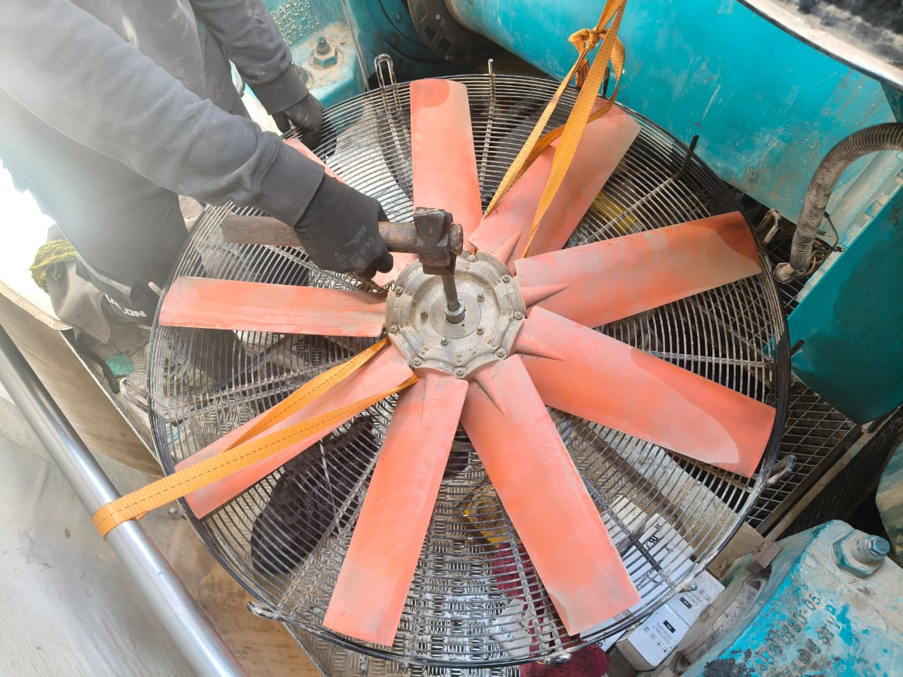
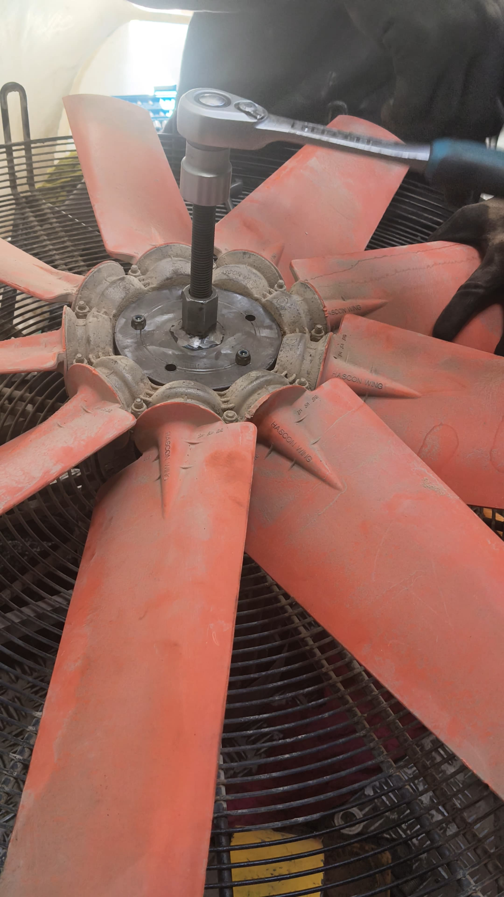

Puller Tool for Cooler Motor Fans
Designed and fabricated a dedicated puller tool using steel rods, plates and bolts to remove stuck cooler fans with uniform force. The solution replaced hammering and prying, reducing effort and the risk of fan or motor damage.
- Improved technician safety during fan removal.
- Faster, easier maintenance and reduced downtime.
- Resume-reported 30–40% cost saving per motor by preventing component damage.
- Zero HSE incidents during implementation and trial phase, as stated in the resume.


Original images extracted from the supplied Kaizen report.